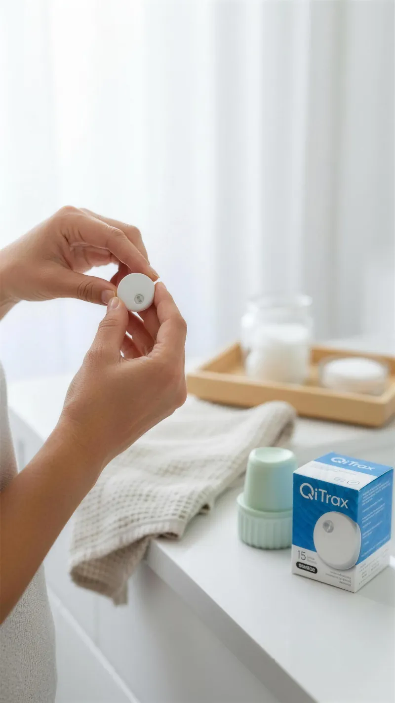
01Aplica el sensor
En la parte de atrás del brazo, con el aplicador: un solo movimiento.

Cada sensor QiTrax viene con su aplicador.
Te lo colocas una vez y mide tu glucosa minuto a minuto durante 15 días.

Del tamaño de una moneda: 22 mm × 4.2 mm y 2.2 g.
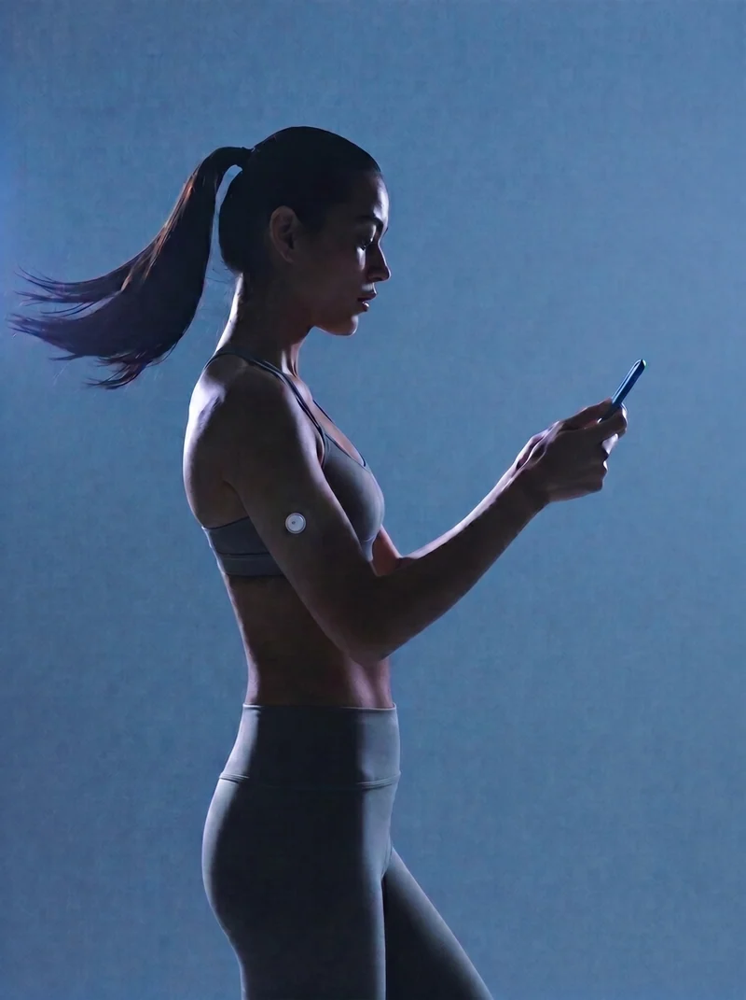
1,440 lecturas al día, sin piquetes.
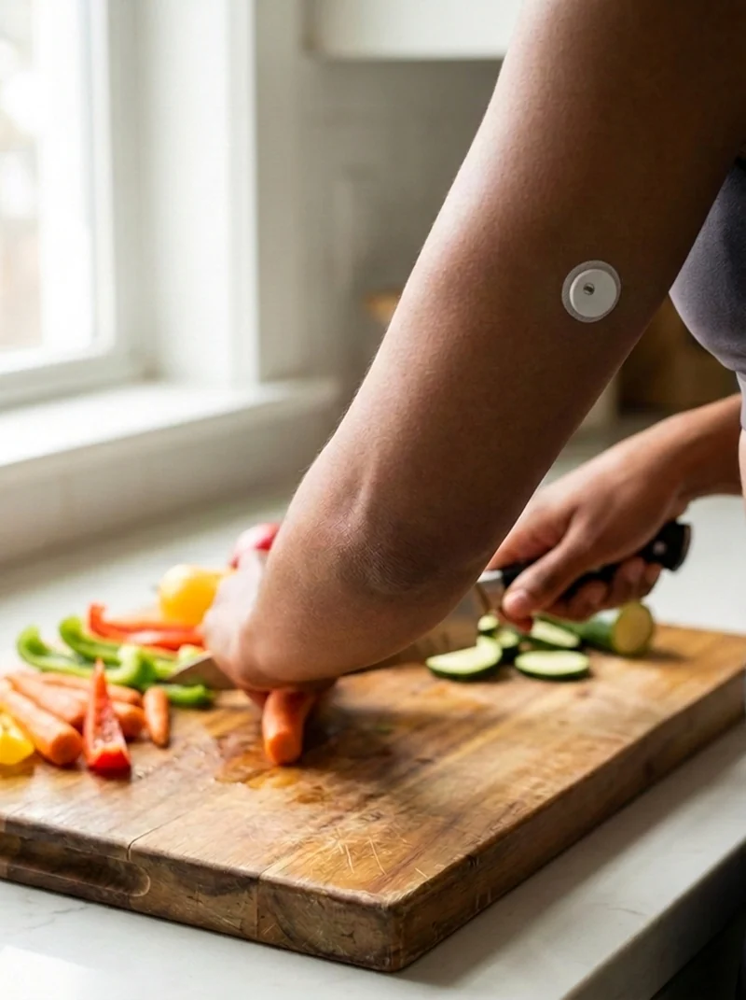
Ve cómo responde tu glucosa a lo que comes.
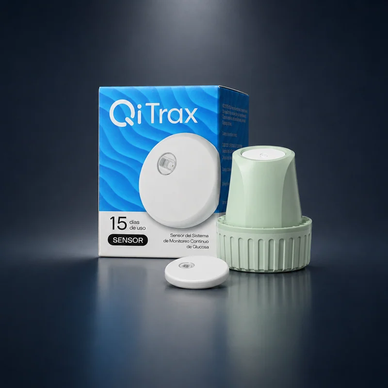
Aplicador de un solo movimiento, en la parte de atrás del brazo.

QiCoach organiza tus datos y patrones de glucosa en la app.
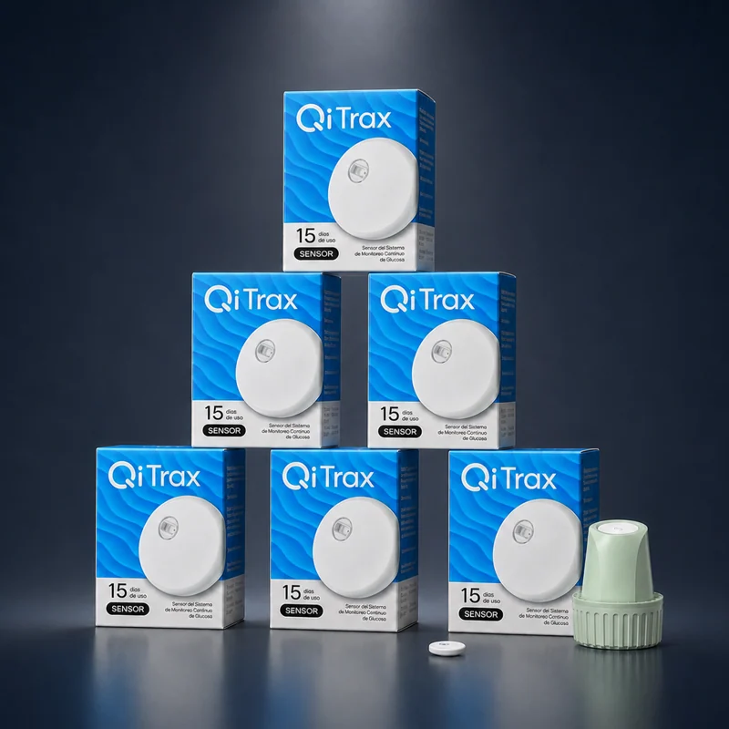
Pack 6: 90 días de monitoreo continuo.
(4,8 estrellas) • 114 reseñas
Cada sensor dura 15 días y viene con su aplicador.
QiTrax mide tu glucosa minuto a minuto. Con Band Pro o Ring Pro, la ves junto a tu sueño y actividad.

Tu glucosa junto a todo lo que mide tu banda.
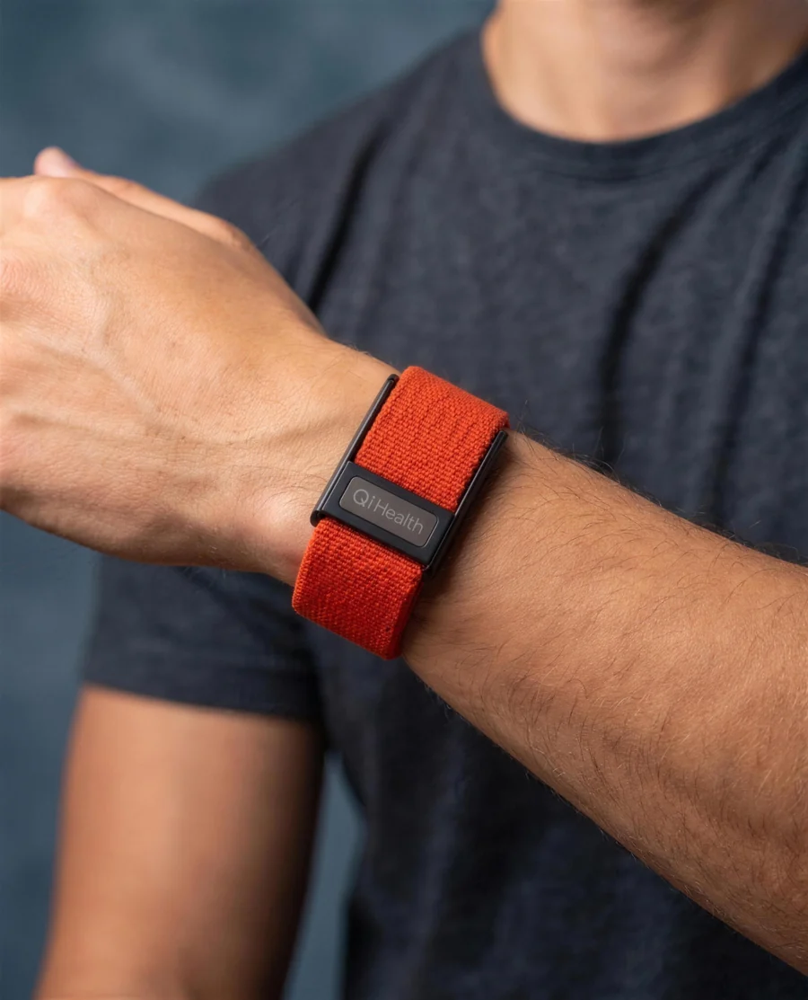

Banda inteligente sin pantalla: frecuencia cardiaca, HRV, SpO2, sueño, estrés, actividad y temperatura de la piel. Producto de bienestar.
Más información
Tu glucosa junto a cómo duermes y te recuperas.
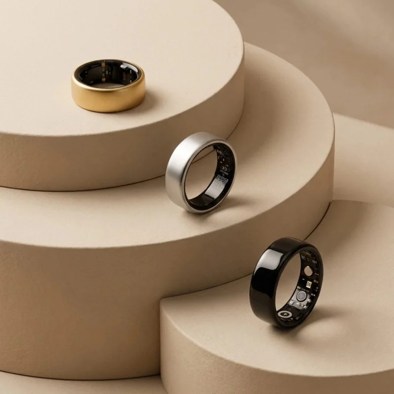

Anillo inteligente: sueño, frecuencia cardiaca, SpO2, estrés y actividad. Elige acabado y talla. Producto de bienestar.
Más informaciónCompra tu paquete una vez aquí, o suscríbete en qihealth.ai con 5% extra en los packs de 2, 4 y 6 sensores: te llegan solos cada mes, cada 2 o cada 3 meses, y puedes pausar o cancelar cuando quieras.
¿Necesitas ayuda para elegir? Escríbenos


Uso para mayores de 18 años. Llega en 3 a 7 días hábiles.
Sensor CGM · Reg. SSA 2370E2025 · Permiso de publicidad 263300201B2529. Consulta a tu médico. Band Pro y Ring Pro: productos de bienestar, no son dispositivos médicos.
Pack 6 sensores
Te lo colocas una vez en la parte de atrás del brazo y, durante 15 días, mide tu glucosa minuto a minuto.
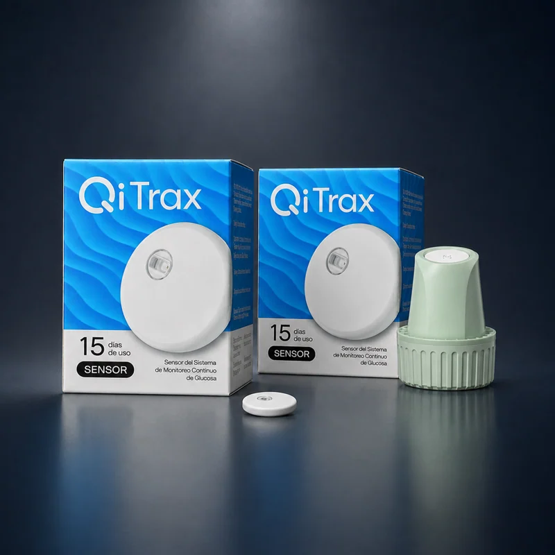

Del tamaño de una moneda: 22 mm × 4.2 mm y 2.2 g. Descubre de cerca el sensor.

En la parte de atrás del brazo, con el aplicador: un solo movimiento.
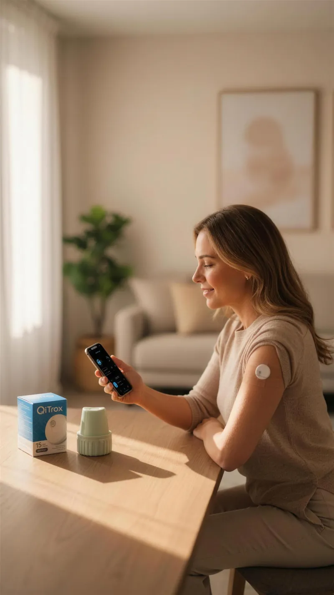
Abre QiHealth y vincula el sensor por Bluetooth. La primera lectura llega en unos 60 minutos.
QiCoach organiza tus datos y patrones de glucosa para facilitar su visualización.
Suma la Band Pro o el Ring Pro a QiTrax y ve tu glucosa junto a tu sueño y tu actividad.
Comprar QiTraxSensor de glucosa de 15 días con 1,440 lecturas al día, sin piquetes.
Banda inteligente sin pantalla: siete señales las 24 horas y más de 15 días de batería.
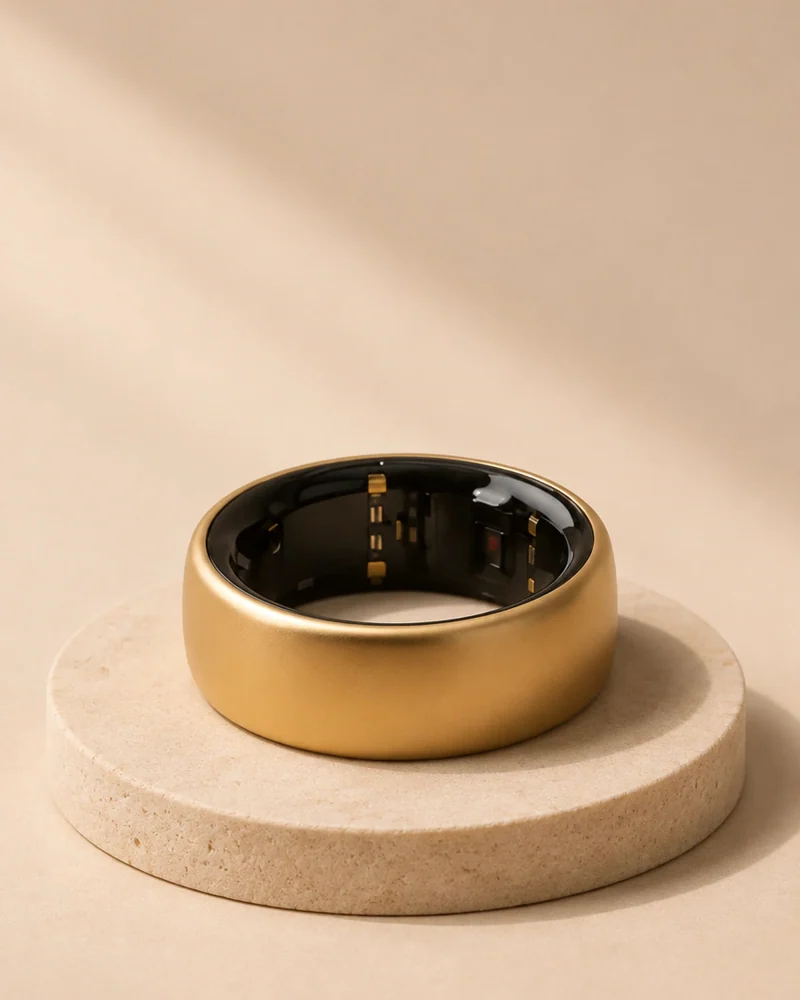
Descubre el Ring ProAnillo inteligente: sueño, frecuencia cardiaca, SpO2, estrés y actividad, con más de 7 días de batería.
Conoce QiCoachNuestra IA une tus datos para darte una visión más completa de cómo responde tu cuerpo.
Escríbenos por WhatsApp y te ayudamos a elegir tu dispositivo.
Monitoreo continuo de glucosa durante 15 días, sin piquetes. QiCoach organiza tus datos en la app QiHealth.
Una lectura por minuto: la película completa de tu glucosa, no solo un momento aislado.

Un sensor, 15 días continuos, sin piquetes ni calibraciones manuales.
Ve cómo responde tu glucosa a la comida, al ejercicio y al sueño, día con día.
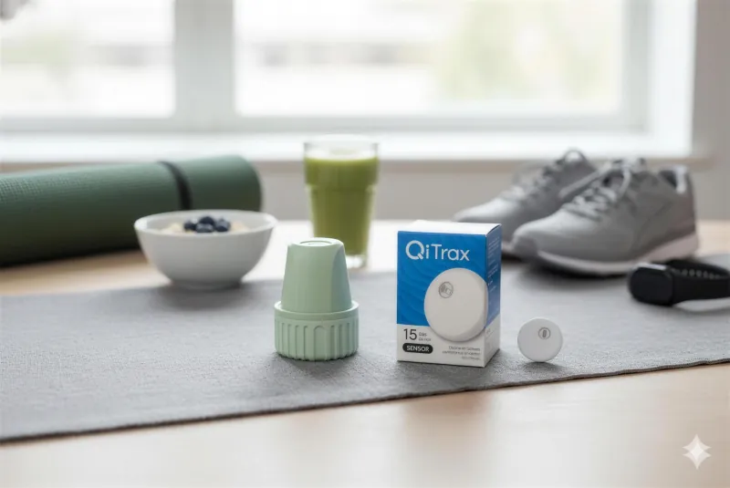
Puedes ducharte, nadar en alberca y hacer ejercicio sin retirarlo.
Validado en 87 pacientes en un ensayo clínico multicéntrico y aleatorizado.
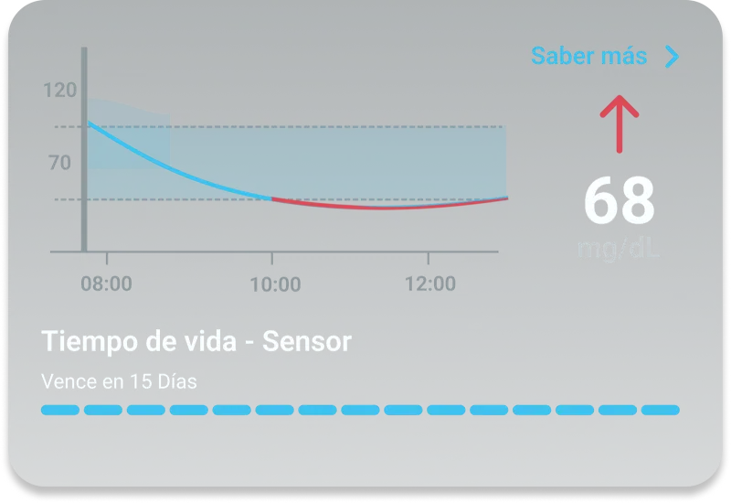
Todas las lecturas del estudio clínico quedaron en zona clínicamente segura (A+B).
Seis alertas configurables y tiempo en rango calculado automáticamente. Ilustrativo.
Exporta tu reporte de 15 días desde la app y llévalo a tu consulta.
Reseñas de compradores publicadas en qihealth.ai (Judge.me). Se muestran tal como las escribieron sus autores. [VALIDAR permiso de uso]
15 días (360 horas) de uso continuo.
En el ensayo clínico, el 96% de las 174 unidades completaron los 15 días sin fallos.
QiTrax tiene un MARD de 8.66% (IC 95%: 8.27%–9.05%), validado en un ensayo clínico multicéntrico.
El MARD mide el error promedio frente a una muestra de sangre de referencia: mientras más bajo, mayor la concordancia.
No. El sensor viene calibrado de fábrica y opera de forma autónoma durante los 15 días.
En la parte posterior del brazo superior (tríceps). No en el antebrazo ni en el abdomen. Evita cicatrices, lunares o estrías y elige un sitio distinto al del sensor anterior.
En el estudio clínico, el 93.1% de los participantes reportó que la inserción fue sin dolor; el 6.9% reportó una molestia moderada tolerable.
Sí. Tiene certificación IP68: puedes ducharte, nadar en alberca y hacer ejercicio sin retirarlo.
No. Los resultados de QiTrax son una herramienta de monitoreo continuo y no son la base para modificar tratamientos. Toda decisión clínica debe tomarse con tu médico.